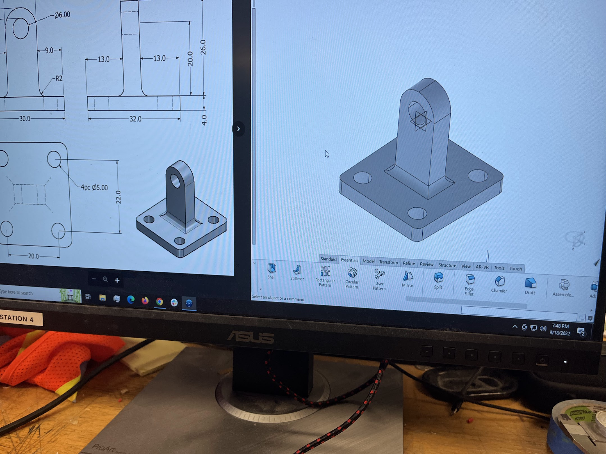
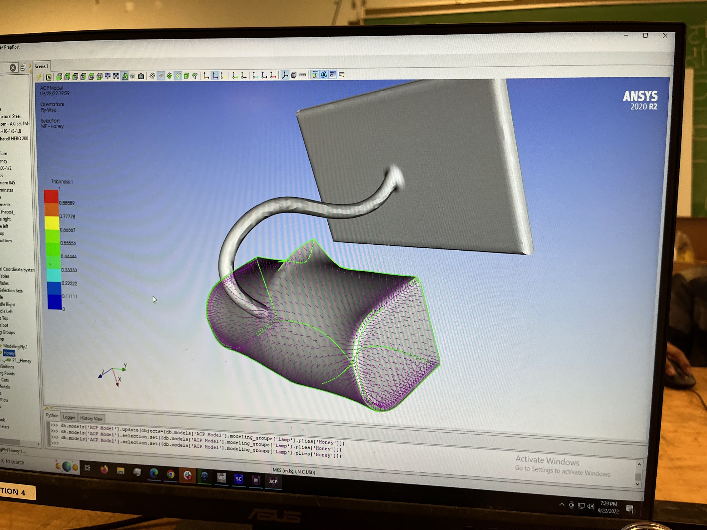
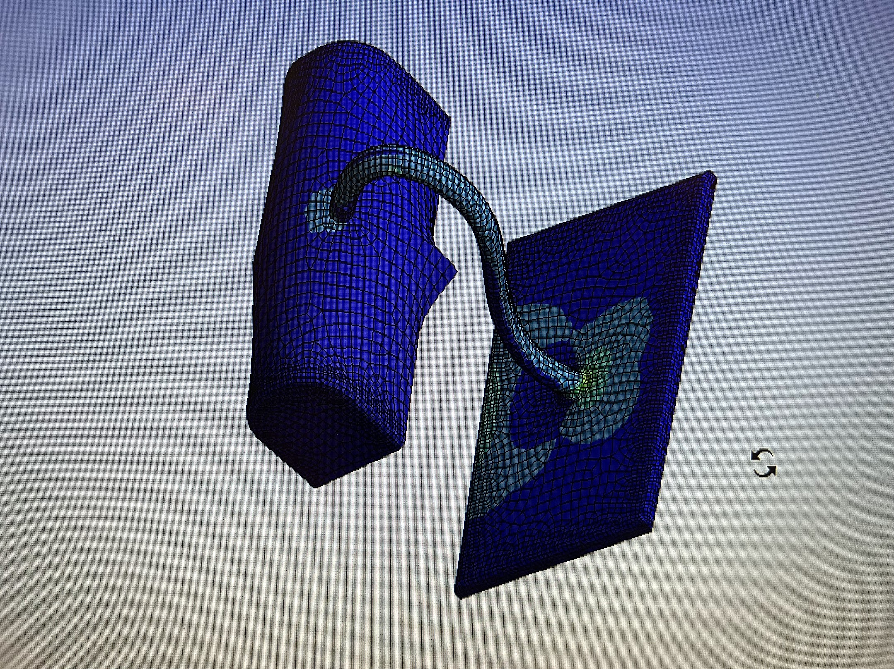

CAD and Simulations
  This is just a brief collection of my introduction into CAD software and simulations. I learned in a recruitment phase for Blue Sky Solar Racing and we had recruitment projects to complete on our own time. Above you can see a model that I recreated in Catia based on drawings and also a lamp that I modeled and simulated a load on.


I also had to CAD a chassis and rollcage as part of a recruitment assignment, and I then simulated structural loads on the roll cage according to the regulated impact loads for one of my first assignments. You can see the load application area on the top of the roll cage.